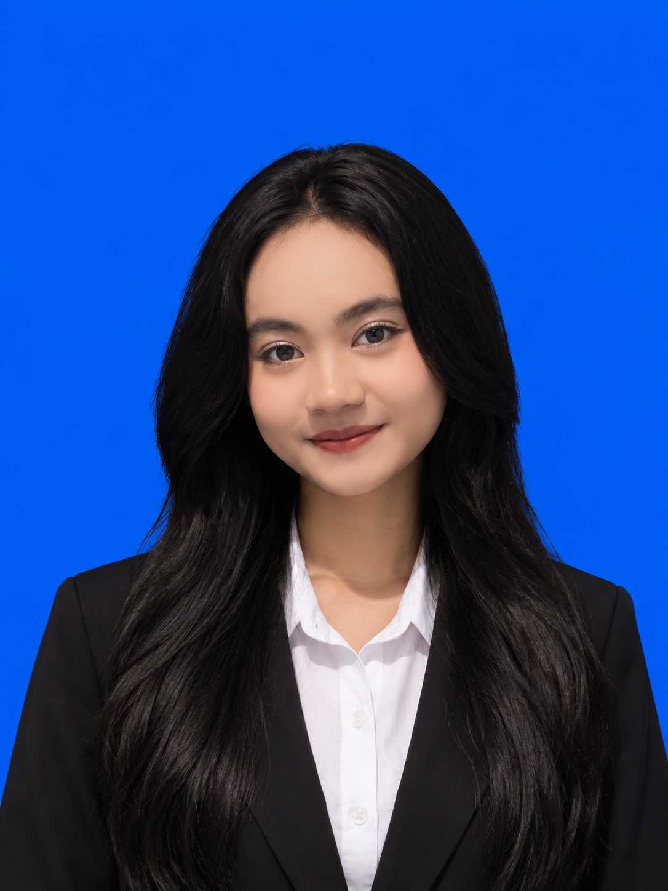

ABOUT ME
Sedikit cerita tentang diri saya, perjalanan belajar, dan hal-hal yang saya minati.

HALO, SAYA WINDARTI
Saya adalah seorang mahasiswa yang sedang menempuh pendidikan dan terus belajar untuk menambah pengalaman serta pengetahuan di bidang teknologi.
Selama perkuliahan, saya mendapatkan kesempatan untuk mengerjakan berbagai tugas dan project. Dari kegiatan tersebut, saya belajar mengenai pembuatan website, desain antarmuka, dan dasar jaringan komputer.
Saya menyadari bahwa masih banyak hal yang perlu saya pelajari. Karena itu, saya ingin terus mencoba, belajar dari pengalaman, dan mengembangkan kemampuan saya secara bertahap.
Lihat Project Saya →AKTIVITAS SAYA
Status
Sedang menjalani proses pembelajaran di perguruan tinggi.
Bidang yang Dipelajari
Mempelajari dasar teknologi, website, dan desain antarmuka.
Aktivitas
Mengembangkan pengalaman melalui tugas dan project perkuliahan.
MY JOURNEY
Saya percaya bahwa kemampuan tidak harus langsung sempurna. Yang penting adalah terus belajar, mencoba, dan berkembang sedikit demi sedikit.